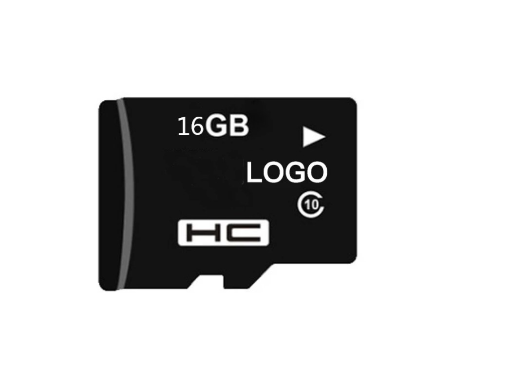

My Project Idea
Overview:
My idea is for a Security system that the owner of a toolbox can use to keep an eye on their hard-earned tools and toolbox. The owner and user of this security system will be able to rest easy knowing that the security of their tools, valuables and equipment is not only protected by the original lock and key, but also by the toolbox security system as well. This system will allow the user to know if and which section of their toolbox has been opened without their consent while they have been away, furthermore also providing an image of the event recorded as well and stored into a Micro SD card for easy reading. And in any instance a tool or belonging of the user goes missing they have some form of evidence and an image of the culprit that took what is found to be missing.
Motivation:
As it stands the vast majority of Automotive Technicians around the world are required to provide their own tools and toolboxes for their jobs. This means they must use money from their own pockets to purchase their tools, toolboxes and specialized equipment to be able to work and heavily rely heavily on them daily. To a technician their tools are more than just equipment to complete tasks at work, their toolboxes and tool collections are a huge part of themselves reflected in their equipment. Unfortunately, it is not an uncommon occurrence that a technician’s tools or toolboxes are damaged or even have tools, belongings and valuables stolen from their toolboxes. This can occur during work hours while the person is away from their work area or even after work hours before the entire workshop building has been locked. Also, there are instances when others borrow tools without asking while the individual is away and forget to return them. But I personally feel that security for toolboxes only relies on the standard lock and key. I have noticed in my 9 years in the Automotive Industry and in every workshop, I have worked at is that the first thing most mechanics do once they have arrived at their work area in the morning is to place their phones into their toolboxes and when they carry out road tests and other duties outside the workshop, they always take their phones with them at all times in case of emergencies. So why not use this habit that is already engraved in most technicians and apply it to a security system that will benefit them and their tools all together. Especially when you consider most technicians have spent thousands of dollars in their toolboxes, tools and equipment, I personally estimate in my 9 years as a technician I have spent easily over $20,000 in my tool collection alone.
Descritption:
The way the toolbox security system works is with the ESP32 Arduino Board which connects to the user’s mobile device via Wi-Fi signal emitted by the Arduino board. This then acts as a “switch” to activate and deactivate the security system. While the user is nearby, and their phone is connected to the Arduino board, the system will then have the motion sensors and camera turned off. Once the user leaves and takes their phone with them and the phone is out of range from the Wi-Fi signal then the Arduino activates the camera and motion sensors to start monitoring. The security system will remain in an idle state until the motion sensors are triggered by the movement of someone approaching the toolbox. The triggering of the motion sensors will then send a signal to the Arduino board, the board will then activate the camera and then capture a series of images which are then transferred and stored into the expandable memories card stored in the control box. The contents of the control box will be the Esp32 Arduino board, a rechargeable power source and a SD memory card, also to reduce cost the control box will be 3D printed. This control box will be able to be mounted to any desired location on the toolbox via 3m tape, that way the user can avoid drilling holes into their toolbox, which can cause corrosion over time and damage to their toolbox. Also, an added benefit of the 3m tape is that the control box can be remounted to a different location if required without damage to the paint of the toolbox. Another feature to this security system is the user will be able to know which section of their toolbox has been opened while they have been away. Part of the kit will be a small light panel with a series of LEDs, each LED will be numbered corresponding to the number of drawers on the toolbox they have been fitted to. Next to each drawer of the toolbox will be fitted a magnetic sensor via 3m tape, this sensor will be tripped when any drawer is opened while the system has been activated. Each drawer will be fitted with a small magnet on the side panel facing the sensor, when the drawer is opened and the sensor is triggered by the magnet on the sider of the drawer this will alert the Arduino to light up the LED on the panel corresponding to that drawer’s number that has been opened. So, when the user returns to their toolbox, they can see from the light panel that a drawer and know which drawer from their toolbox has been opened while they have been away. The user can then remove the SD card and using an adapter provided in the kit they can upload the images captured by the camera to their device and view the event that has been captured. Once the user has viewed the images, cleared the memory card, reinstalled the memory card and reset the system they can carry on working.
Tools and Technologies:
Source: Adapted from 99tech (2021).
Source: Adapted from Banggood (2021).
Source: Adapted from Banggood (2021).
HC-SR501 Adjustable Infrared IR Pyroelectric PIR Module Motion Sensor Human Body Induction Detector

Source: Adapted from Banggood (2021).
Micro SD memory Card:
This will act as the location where all the images captured by the small wide lens camera during the detection of someone approaching the toolbox when the system is activated
Source: Adapted from Banggood (2021).
Circuit board and LEDs:
This will be required to construct a small LED light panel for the display panel showing the user which drawer has been opened during the time they have been away.
Arduino IDE 1.8.15:
This is an open-source Arduino Software that makes it significantly easier to code and upload data to any Arduino board.
Skills Required:
Outcome: